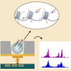
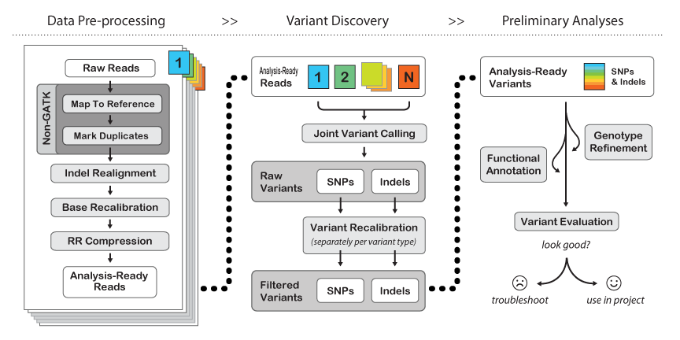
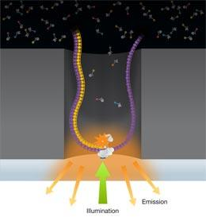
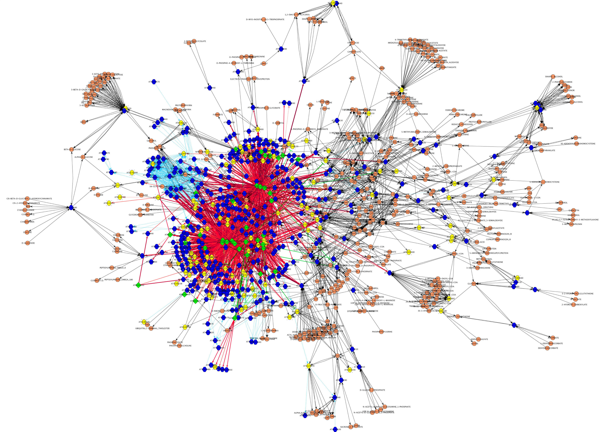

|
|
|
|
|
Journals |
|
|

web
|
The recent development of a semiconductor-based, non-optical
DNA sequencing technology promises scalable, low-cost and rapid
sequence data production. The technology has previously been
applied mainly to genomic sequencing and targeted
re-sequencing. Here we demonstrate the utility of Ion Torrent
semiconductor-based sequencing for sensitive, efficient and
rapid chromatin immunoprecipitation followed by sequencing
(ChIP-seq) through the application of sample preparation
methods that are optimized for ChIP-seq on the Ion Torrent
platform. We leverage this method for epigenetic profiling of
tumour tissues.
Nature Communications 2013, 4:2672
|
|
|
|
|
|
|

web
|
This unit describes how to use BWA and the Genome Analysis Toolkit (GATK) to map
genome sequencing data to a reference and produce high-quality variant calls that
can be used in downstream analyses. The complete workflow includes the core NGS
data-processing steps that are necessary to make the raw data suitable for analysis
by the GATK, as well as the key methods involved in variant discovery using the
GATK.
Current Protocols in Bioinformatics 2013 43:11.10.
|
|
|
|
|
|
|

web
|
Pacific Biosciences' single molecule, real-time sequencing technology, SMRT, is one of several next-generation
sequencing technologies that are currently in use. In the past, it has been somewhat overlooked because of its
lower throughput compared with methods such as Illumina and Ion Torrent, and because of persistent rumors that
it is inaccurate. Here, we seek to dispel these misconceptions and show that SMRT is indeed a highly accurate
method with many advantages when used to sequence small genomes, including the possibility of facile closure
of bacterial genomes without additional experimentation. We also highlight its value in being able to detect
modified bases in DNA.
Genome Biology 2013, 14:405
|
|
|
|
|
|
|
web
|
By characterizing the geographic and functional spectrum of human genetic variation, the 1000 Genomes Project aims
to build a resource to help to understand the genetic contribution to disease. Here we describe the genomes of 1,092
individuals from 14 populations, constructed using a combination of low-coverage whole-genome and exome sequencing.
By developing methods to integrate information across several algorithms and diverse data sources, we provide a
validated haplotype map of 38 million single nucleotide polymorphisms, 1.4 million short insertions and
deletions, and more than 14,000 larger deletions. We show that individuals from different populations carry different
profiles of rare and common variants, and that low-frequency variants show substantial geographic differentiation,
which is further increased by the action of purifying selection. We show that evolutionary conservation and coding
consequence are key determinants of the strength of purifying selection, that rare-variant load varies substantially
across biological pathways, and that each individual contains hundreds of rare non-coding variants at conserved sites,
such as motif-disrupting changes in transcription-factor-binding sites. This resource, which captures up to 98% of
accessible single nucleotide polymorphisms at a frequency of 1% in related populations, enables analysis of common
and low-frequency variants in individuals from diverse, including admixed, populations.
Nature 2012, 491:56-65
|
|
|
|
|
|
|
web
|
Pacific Biosciences technology provides a fundamentally new data type that provides the potential to overcome some
limitations of current next generation sequencing platforms by providing significantly longer reads, single molecule
sequencing, low composition bias and an error profile that is orthogonal to other platforms. With these potential
advantages in mind, we here evaluate the utility of the Pacific Biosciences RS platform for human medical amplicon
resequencing projects. We evaluated the Pacific Biosciences technology for SNP discovery in medical resequencing
projects using the Genome Analysis Toolkit, observing high sensitivity and specificity for calling differences in
amplicons containing known true or false SNPs. We assessed data quality: most errors were indels (~14%) with few
apparent miscalls (~1%). In this work, we define a custom data processing pipeline for Pacific Biosciences data for
human data analysis. Critically, the error properties were largely free of the context-specific effects that affect
other sequencing technologies. These data show excellent utility for follow-up validation and extension studies in
human data and medical genetics projects, but can be extended to other organisms with a reference genome.
BMC Genomics 2012, 13:375
|
|
|
|
|
|
|
web
|
Medulloblastomas are the most common malignant brain tumours in children1. Identifying
and understanding the genetic events that drive these tumours is critical for the
development of more effective diagnostic, prognostic and therapeutic strategies.
Recently, our group and others described distinct molecular subtypes of medulloblastoma
on the basis of transcriptional and copy number profiles2, 3, 4, 5. Here we use
whole-exome hybrid capture and deep sequencing to identify somatic mutations across
the coding regions of 92 primary medulloblastoma/normal pairs. Overall, medulloblastomas
have low mutation rates consistent with other paediatric tumours, with a median of
0.35 non-silent mutations per megabase. We identified twelve genes mutated at statistically
significant frequencies, including previously known mutated genes in medulloblastoma
such as CTNNB1, PTCH1, MLL2, SMARCA4 and TP53. Recurrent somatic mutations were newly
identified in an RNA helicase gene, DDX3X, often concurrent with CTNNB1 mutations,
and in the nuclear co-repressor (N-CoR) complex genes GPS2, BCOR and LDB1. We show
that mutant DDX3X potentiates transactivation of a TCF promoter and enhances cell
viability in combination with mutant, but not wild-type, β-catenin. Together,our
study reveals the alteration of WNT, hedgehog, histone methyltransferase and now
N-CoR pathways across medulloblastomas and within specific subtypes of this disease,
and nominates the RNA helicase DDX3X as a component of pathogenic β-catenin signallin
in medulloblastoma.
Nature 2012, 488:106-110
|
|
|
|
|
|
|

endnote ·
bibtex
pdf ·
web
|
At a time when genomes are being sequenced by the hundreds, much attention has
shifted from identifying genes and phenotypes to understanding the networks of
interactions among genes.We developed a gene network developmental model
expanding on previous models of transcription regulatory networks. In our model,
each network is described by a matrix representing the interactions between
transcription factors, and a vector of continuous values representing the
transcription factor expression levels in an individual.In this work we used the
gene network model to look at the impact of mating as well as insertions and
deletions of genes in the evolution of complexity of these networks. We found
that the natural process of diploid mating increases the likelihood of maintaining
complexity, especially in higher order networks (more than 10 genes). We also show
that gene insertion is a very efficient way to add more genes to a network as it
provides a much higher chance of developmental stability.
BMC Evolutionary Biology 2011, 11:363.
|
|
|
|
|
|
|
endnote ·
bibtex
pdf
|
The principles governing protein evolution under strong selection are important
because of the recent history of evolved resistance to insecticides, antibiotics,
and vaccines. One experimental approach focuses on studies of mutant proteins and
all combinations of mutant sites that could possibly be intermediates in the
evolutionary pathway to resistance. In organisms carrying each of the engineered
proteins, a measure of protein function or a proxy for fitness is estimated. The
correspondence between protein sequence and fitness is widely known as a fitness
landscape or adaptive landscape. Here, we examine some empirical fitness landscapes
and compare them with simulated landscapes in which the fitnesses are randomly
assigned. We find that mutant sites in real proteins show significantly more
additivity than those obtained from random simulations. The high degree of
additivity is reflected in a summary statistic for adaptive landscapes known as the
"roughness," which for the actual proteins so far examined lies in the smallest 0.5%
tail of random landscapes.
PNAS 2010: 107 Suppl 1:1747-51.
|
|
|
|
|
|
|
endnote ·
bibtex
pdf
|
Short-read sequencing techniques provide the opportunity to capture genome-wide
sequence data in a single experiment. A current challenge is to identify questions
that shallow-depth genomic data can address successfully and to develop corresponding
analytical methods that are statistically sound. Here, we apply the Roche/454
platform to survey natural variation in strains of Drosophila melanogaster from an
African (n = 3) and a North American (n = 6) population. Reads were aligned to the
reference D. melanogaster genomic assembly, single nucleotide polymorphisms were
identified, and nucleotide variation was quantified genome wide. Simulations and
empirical results suggest that nucleotide diversity can be accurately estimated from
sparse data with as little as 0.2× coverage per line. The unbiased genomic sampling
provided by random short-read sequencing also allows insight into distributions of
transposable elements and copy number polymorphisms found within populations and
demonstrates that short-read sequencing methods provide an efficient means to
quantify variation in genome organization and content. Continued development of
methods for statistical inference of shallow-depth genome-wide sequencing data will
allow such sparse, partial data sets to become the norm in the emerging field of
population genomics.
Genome Biology and Evolution 2009: 449 - 465.
|
|
|
|
|
|
|
|
|
|
|
Patents |
|
|
|
While next generation sequencing is enabling genomic discoveries at an
unprecedented pace, their large-scale validation remains a challenge, mostly due to
the high costs of preparing large numbers of samples for sequencing. Here we
present a cost-effective targeted sequencing framework and analytical methods for
large-scale validation and replication, based on a reference sample guided error
model and pooled variant calling.
US Provisional Patent Application No. 61/893,874 filed October 21, 2013.
|
|
|
|
|
|
|
|
The key concept of this invention is compression of unambiguous regions of the genome. By reducing the representation
of these areas and intelligently keeping sufficient information around the ambiguous regions of the genome. The reduced
representation enables high-throughput analysis of tens-of-thousands of samples to be performed at once. Despite the
compression, it maintains similar or better accuracy (due to being able to process the samples the same time instead of
by batches) as using the uncompressed dataset.
USA patent pending. Submitted March 16th, 2012
|
|
|
|
|
|
|
|
|
|
|
Posters |
|
|

pdf
|
A first look at variant calling in two cenarios: variant discovery and genotyping using the upcoming sequencing technologies
of Pacific Biosciences RS and Life Technologies ION Torrent. We evaluate the quality of the data generated by these instruments,
and the potential for medical and population genetics use for variant calling.
Advances in Genome Biology and Technology - Florida/USA, february 2012
|
|
|
|
|
|
|

pdf
|
The continuous model gives us a more complete view of the evolution of interacting
genes. It allows the addition of more genes to the individuals and is more efficient in
maintaining stability. The notion of a continuous output vector also creates a closer
relationship with the reality of gene networks and gene products where it is not
sufficient to determine whether or not a gene is on or off. Gene product
concentrations play an important role in determining the viability of individuals and
aids in the creation and maintenance of complexity.
This model gives an insight on the mechanisms that regulate the evolution of
complexity with a more general model that could be used to represent the
concentration of the products of gene networks. The inclusion of gene product
concentration brings the model closer to biology and perhaps gives us a better notion
to the rarity of complex viable individuals in the real world.
Society for Molecular Biology and Evolution - Lyon/France, july 2010
|
|
|
|
|
|
|

pdf
|
Detailed knowledge about the rate of the genetic variation
is vital for understanding how HIV induces disease and
develops resistance, as well as for studies on the molecular
epidemiology and origin of the virus. The molecular clock
hypothesis in molecular evolutionary studies has been
controversial since it was first proposed (Zuckerkandl and
Pauling, 1965). A variety of methods have been developed to
test the molecular clock and these have been applied to many
studies, including the molecular evolution of viruses. The
many studies and discussions about the existence of a
molecular clock suitable to the different genes of the HIV-1 have
been based on very small data sets what could likely create
biased results. In this study, we tested 179 HIV-1 sequences
extracted from the GeneBank, with the motifs most expressive
in Brazil (Monica, 2004). The resulting Likelihood Ratio
test (Felsenstein, 1981) rejected the molecular clock
hypothesis for the env V3 region. This casts doubts on
the validity of recent attempts to date the origin of the
epidemic.
XI HIV Dynamics and Evolution Workshop - Stockholm/Sweden, May 2004
|
|
|
|
|
|
|
|
|
{kind=link}